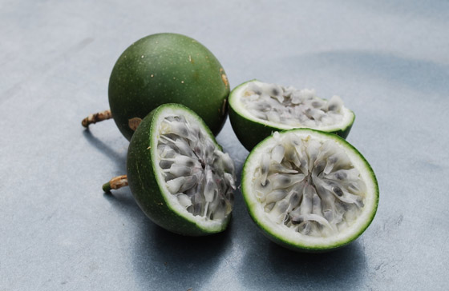
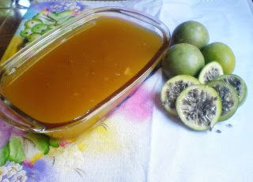

Aspectos Químicos do Maracujá do Mato
O maracujá do mato é uma fruta rica em vitaminas, especialmente vitamina C e antioxidantes. A fruta também contém compostos bioativos que promovem o relaxamento e podem ajudar no controle do estresse.
A polpa do maracujá é amplamente utilizada em sobremesas e sucos, devido ao seu sabor único e refrescante. Além disso, seu elevado teor de fibras contribui para a saúde digestiva.
Receita: Geleia de Maracujá do Mato
Ingredientes
- 6 maracujás do Mato ou ½ xícara da polpa da fruta
- ¼ xícara de açúcar demerara
- ½ colher de sopa de semente de maracujá do Mato (opcional)
- ¼ xícara de hortelã fresca (opcional)
Modo de Preparo
- Lave bem os seis maracujás do Mato e corte-os ao meio. Coloque-os numa panela e adicione água até cobri-los. Cozinhe até ficarem com uma textura lisa. Se necessário, acrescente mais água para sobrar um pouco.
- Passe tudo pela peneira. O conteúdo peneirado deve render pelo menos uma xícara.
- Coloque o açúcar em uma panela junto com a mistura peneirada e leve ao fogo, mexendo de vez em quando, para não grudar no fundo, até obter uma consistência de creme espesso.
- Opcionalmente, acrescente as sementes e a hortelã fresca com o fogo já desligado. Deixe amornar e coloque em potes de vidro. Guarde tampado na geladeira. Sirva com queijos, biscoitos ou pães.